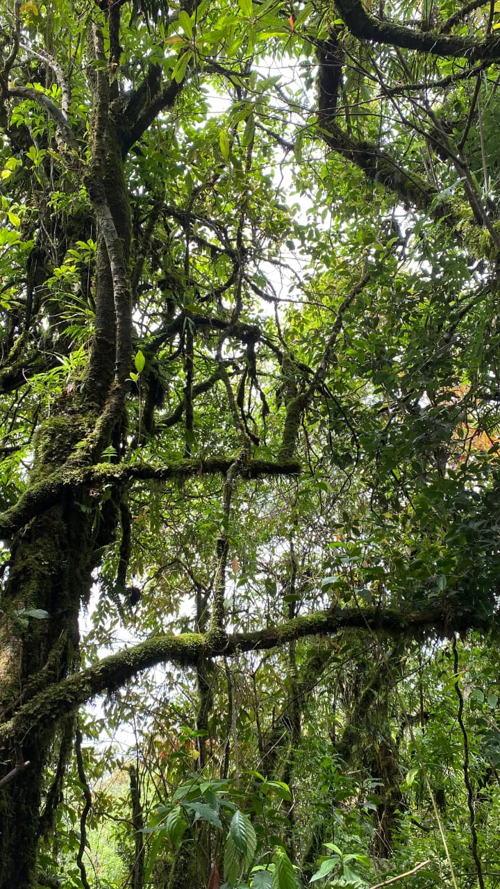
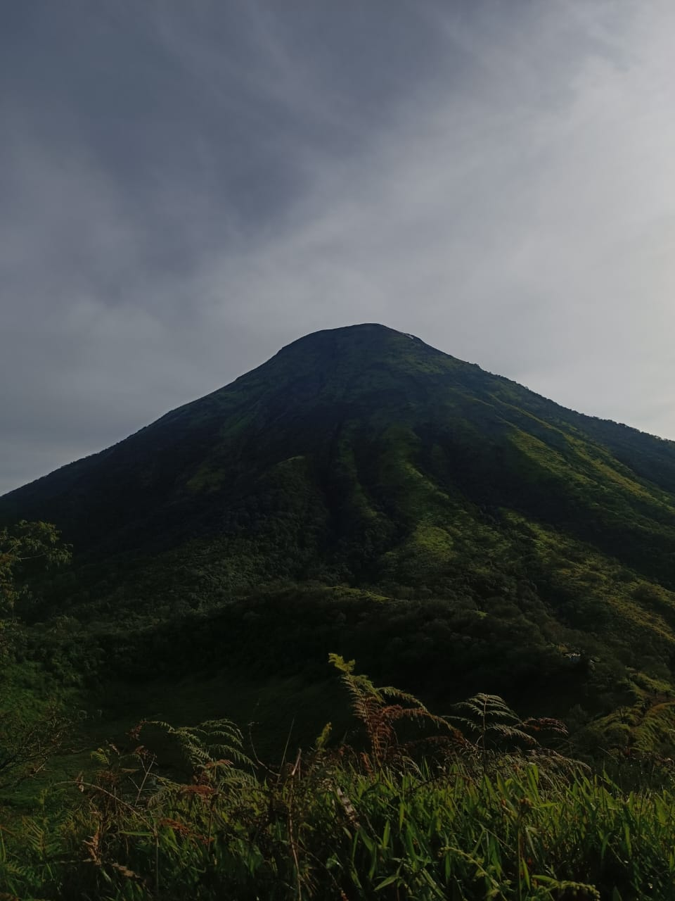

Selamat Datang di Gunung Kembang
Gunung Kembang itu seperti rumah kedua bagi kami para pendaki. Jalurnya tenang, udaranya dingin nan ramah, dan setiap langkah terasa dekat dengan alam. Tidak perlu jadi gunung paling tinggi untuk bikin rindu, karena bukan puncak yang dicari, namun perjalanan, obrolan pelan, jati diri, dan cinta sejati.
Gunung Kembang mengajarkan bahwa mendaki bukan soal menaklukkan, tapi soal pulang dengan hati yang lebih lapang dan kesan.
"Di ketinggian 2340 meter, waktu berjalan lebih pelan, dan alam berbicara lebih jelas."
Hutan Lembap & Vegetasi
Jalur pendakian yang ditutupi vegetasi lebat dan pepohonan rapat dengan lumut yang menempel di batang dan bebatuan.
Kabut Menyelimuti
Kabut sering turun perlahan, membuat langkah melambat dan pikiran ikut tenang dalam kesunyian pegunungan.

Pemandangan Sindoro
Dari beberapa bukaan jalur, Gunung Sindoro terlihat berdiri gagah, menjadi teman seperjalanan dari kejauhan.
